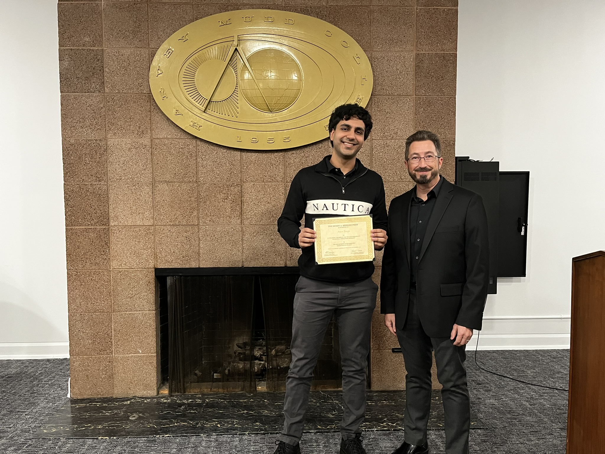

About Me
Hi there! My name is Arjun Taneja, and I'm an undergraduate at Harvey Mudd '25 majoring in Mathematics and Computer Science.
-

Henry A. Krieger Award
The Henry A. Krieger Prize in Decision Sciences is an annual award presented to rising senior student or students who show particular promise in probability, statistics, or operations research. It is normally not awarded to a recipient of the Stavros Busenberg Price, the Giovanni Borrelli Mathematics Prize, or the Giovanni Borrelli Mathematics Fellowship. The Krieger Prize is presented in the fall and is accompanied by an award check.
-
 International COMAP Scholarship Award
International COMAP Scholarship AwardThe International COMAP Scholarship Award is awarded to four top MCM/ICM teams; $10,000 per team with $9000 going to the team members and $1000 to the school, in the name of the advisor. This year 28,912 teams representing 1,815 institutions, consisting of 76,346 students participated in the Mathematical Contest in Modeling (MCM)® and the Interdisciplinary Contest in Modeling (ICM)® contests.
-
 Edge Science Research Project
Edge Science Research ProjectUndertook applied mathematics research on formalizing the incentive misalignment problem in the scientific research community under the mentorship of Professor Jay Bhattacharya of Stanford's Economics department. Adapted stochastic multi-armed bandit theory to construct bounds on expected regret for scientists conditional on particular incentive structures (grants, scholarships, etc.)